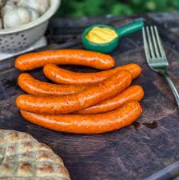
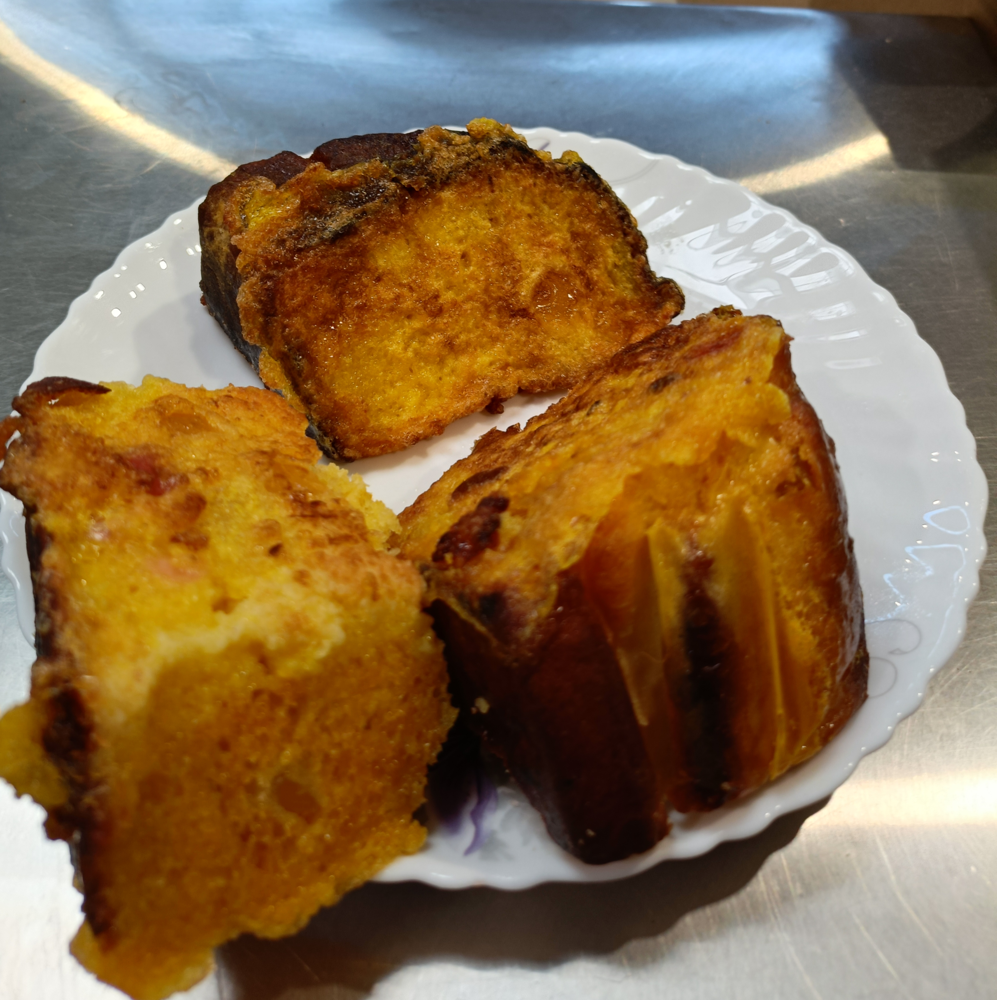
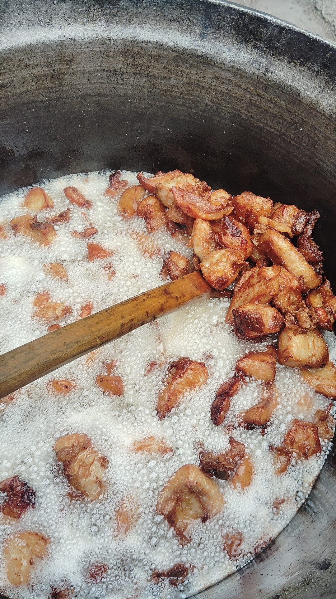
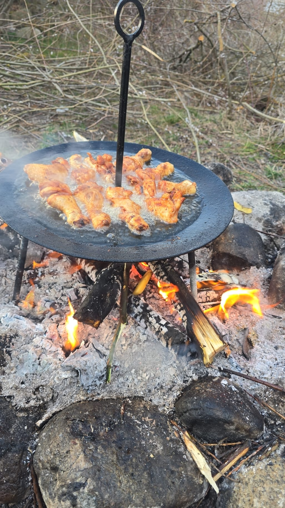
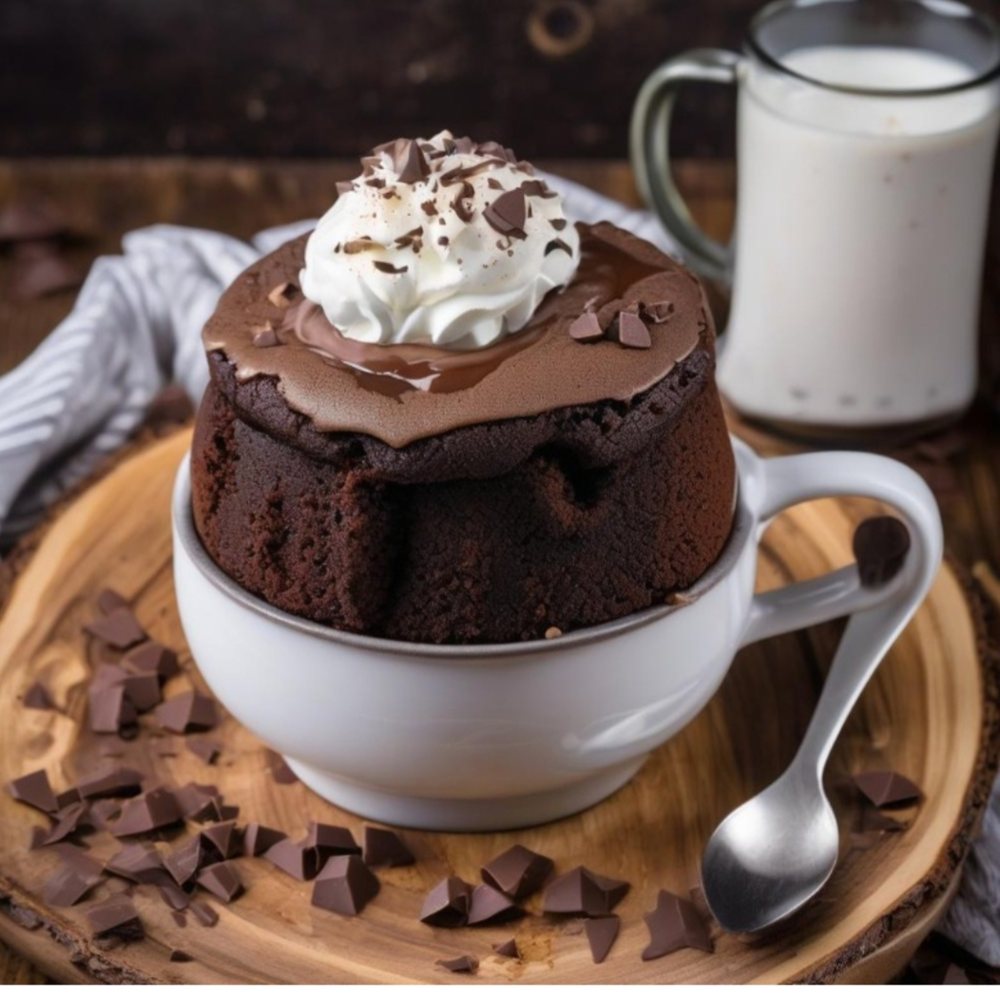

Nu facem catering. Facem mâncare cu rost.
La Domeniile La Buligă, mâncarea este un proces managerial strategic. Gătim asumat, folosind tehnici de slow-cooking, jar viu, fontă și ingrediente locale procurate cu respect.
GĂTIT CU INIMĂ
Nu folosim scurtături. Fiecare ceaun este supravegheat, fiecare foc este rânduit pentru a extrage esența gustului.
TIMP ȘI TIHNĂ
Mâncarea noastră are nevoie de ore, nu de minute. Respectăm ritmul naturii și al proceselor de gătire lentă.
ORIGINE LOCALĂ
Ingredientele vin din curțile oamenilor locului sau din producție proprie, asigurând o prospețime nealterată.
Galerie Preparate

Virșli Tradiționali la Foc

Carne la Vatră & Pireu

Platou Țărănesc Premium

Supă / Ciorbă de Casă

Micul Dejun al Casei

Orez cu Lapte și Scorțișoară

Jumări Proaspete de Casă

Gătit Tradițional la Disc

Preparate Gătite Lent
Concepte și Meniuri

Meniul Zilei (Autentic)

Concept Masă Comună